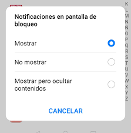

DESARROLLO DE SISTEMAS II
Notificaciones
Daniel Altamirano
Laura Zambrano
Introducción
Un aviso proporciona información simple sobre
una acción en una pequeña ventana emergente.
Avisos
Son ventanas emergentes que permiten la interacción normal
con la aplicación mientras se ejecuta.
Desaparecen después de un tiempo y no son interactivas.
Avisos
Para agregarlos en una aplicación se debe crear una
instancia de objeto “Toast” con el método “makeText()”.
Avisos

Requiere tres parámetros; el contexto, el mensaje que
se mostrará y la duración del mismo. Para que se
visualice se hace uso del método “show()”.
Avisos

También se puede establecer la ubicación del aviso en pantalla
mediante el método “setGravity()” y colocar los parámetros
que definirán su ubicación.
Notificaciones
Son mensajes que muestra Android fuera de la interfaz
de usuario de la aplicación para proporcionar al usuario
recordatorios, mensajes de otras personas o información
específica de la app.
Notificaciones

Características de las notificaciones en Android
• El diseño de una notificación está determinado por las plantillas del sistema;
la aplicación simplemente define el contenido.
Características de las notificaciones en Android
• Aunque no es obligatorio, cada notificación debería
abrir una actividad de app adecuada cuando se la presiona.
Características de las notificaciones en Android
• A partir de Android 7.0, también se puede agregar una acción
para responder a los mensajes o ingresar otro texto directamente
desde la notificación.
Características de las notificaciones en Android
•
Si se quiere mostrar la notificación de manera más larga,
se puede aplicar una plantilla adicional que habilite un
área de texto más grande y expandible.

Características de las notificaciones en Android
•
Actualizar una notificación existente en lugar de emitir una nueva
Características de las notificaciones en Android
• A partir de Android 8.O, todas las notificaciones deben asignarse a un canal; si no, no aparecen.
Características de las notificaciones en Android
• El canal también es el lugar donde se especifica el nivel de
importancia para las notificaciones en Android 8.0 y versiones
posteriores.

Características de las notificaciones en Android
• Android usa la importancia de una notificación para
determinar el nivel de interrupción de cada notificación.
Como crear una notificación
Verificar que en el archivo build.gradle a nivel de módulo contenga la siguiente dependencia:

Como crear una notificación
El contenido y el canal de la notificación se definen con el objeto “NotificationCompat.Builder”.
Como crear una notificación
De forma predeterminada, el contenido se trunca pero se puede habilitar una
notificación expandible mediante setStyle():
Como crear una notificación
Para que la notificación se publique, debe registrarse el canal de
notificaciones mediante createNotificationChannel()

Como crear una notificación
Mediante el método setContentIntent() se debe configurar la respuesta al tocar la
notificación, para ello también se hace uso del método setAutoCancel() ; para quitar
automáticamente la notificación cuando el usuario la abre. Y del método setFlags() que
ayuda a conservar la experiencia de navegación:

Como crear una notificación
Para que aparezca la notificación, se llama a NotificationManagerCompat.notify() y se le
pasa un ID único para la notificación y el resultado de NotificationCompat.Builder.build().

Como crear una notificación
Una notificación puede ofrecer hasta tres botones de acción, pero estos botones
no deben duplicar la acción realizada cuando el usuario presiona la notificación.

Para agregarlos, se pasa un elemento PendingIntent al método addAction().
Diversas funciones que se pueden configurar en relación a las notificaciones
• Botones de respuesta.
• Actualizar notificaciones.
• Quitar notificaciones.
• Agregar barras de progreso.
• Mostrar mensajes urgentes.
Diversas funciones que se pueden configurar en relación a las notificaciones
• Crear notificaciones expandibles (con imágenes o mucho texto).
• Recuperar entradas del usuario a partir de una respuesta.
• Establecer la visibilidad de la pantalla de bloqueo.
• Establecer categorías para todo el sistema.
• Mostrar conversaciones.
Conclusiones
• Aun que las notificaciones, una vez activadas, tienen su propio
formato predefinido, podemos configurar gran parte de su
contenido para que sean más personalizadas.
• Es importante tener en cuenta la compatibilidad y configuración
de las diferentes versiones de Android al momento de configurar las
notificaciones.
• Las librerías necesarias para configurar notificaciones,
contienen una documentación extensa y bastante útil que permite
personalizar y utilizar las notificaciones de manera sencilla.
Gracias
Daniel Altamirano y Laura Zambrano
/